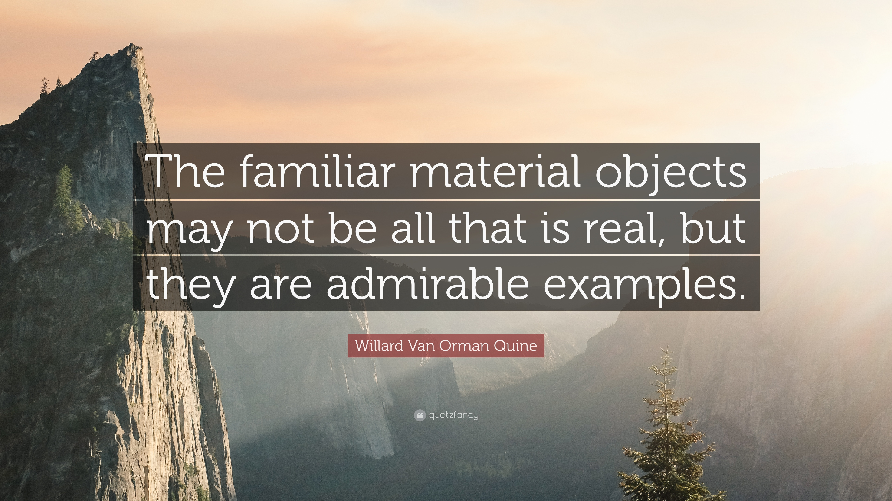

Quine published a book titled From a Logical Point of View in 1953. In a personal interview he says he chose the title from a song popular at that time which has the lyrics "from my personal point of view".
If you like to listen to the song please click here.
Quine had many books. I listed some of the most important ones here. If you want to purchase these books on amazon just click on them.
and finally here is a quote by Quine which in my opinion not only vocalizes his views on ontology but also on epistemology.
